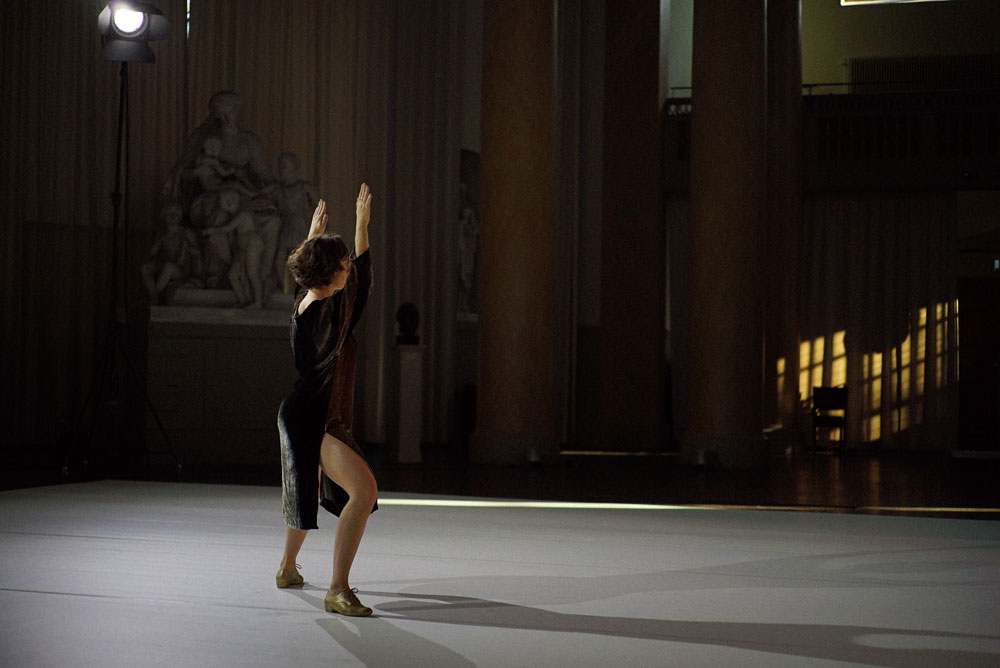

Approximations 
"Over the past few years my choreographic work has lived its public life mostly in dance studios, across the bodies of people who found themselves practising my scores together. Every now and then it makes a stage appearance and addresses audiences in a frontal manner. In those cases I use language and movement, so that it tends to look like a lecture demonstration. For the symposium I would like to open up the notion of approximation. Related to the image of an always receding horizon, approximation refers both to coming closer and to inexactitude. The etymology of the word translates as “towards very near”; this never arriving closeness might be a chance to keep a relational space alive, of which distance and intimacy function as coordinates. I hope for the context of this performance to be the site of our coming closer—to this notion, to dancing, to attending, to each other." (Within Practice, programm note) Score & Dance: Alice Chauchat Text: Gertrude Stein Reader: Siegmar Zacharias Costume: Alice Chauchat Light design and technical support: Lumination of Sweden Within Practice is a collaboration between Säfsten Production and the Dance Department, DOCH Eric Ericsonhallen, October 13, 2018
|